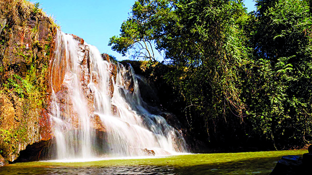
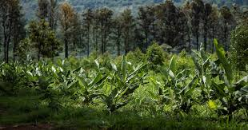

Roteiro - Viagem à Serra da Mantiqueira
- 8:00 - Saída de van da Estação Paraíso do metrô, ou você vai com seu próprio veículo.
- 10:30 - Chegando em Itirapina, tomamos um café da manhã.
- 11:00 - Trilha pela Mata Atlântica da região.
- 12:45 - Almoço.
- 13:30 - Visita ao Sítio GAN, onde você terá uma vivência prática e teórica sobre a implementação e o manejo de sistemas agroflorestais no coração da Mata Atlântica.
- 15:30 - Volta para casa.

